CSA STEAUA

Home|Scurt istoric|Peluza|Stadionul
Vechea tradiție a practicării sportului în Armata Română a condus la înființarea, în 1947, a Asociației Sportive Armata; Aceasta a reprezentat punerea în practică a preocupărilor unor mari iubitori ai sportului – printre care generalul-maior Dumitru Petrescu, generalul-maior Oreste Alexandrescu, comandorul Traian Săvulescu, locotenent-colonelul Ion Costăchel, maiorul Cornel Șandru – care începuseră să poarte discuții în acest sens încă din vara anului 1946; Înființarea A.S. Armata a răspuns necesității ca tinerii sportivi încorporați pentru a satisface stagiul militar să continue, în mod organizat, desăvârșirea măiestriei lor sportive; totodată, aceasta a avut drept scop să se dea posibilitatea talentelor afirmate din rândurile cadrelor permanente ale armatei de a se realiza și pe tărâmul activității sportive de performanță;>
1948
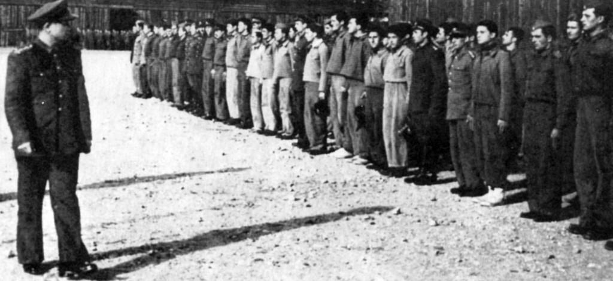
- Se înființează 5 secții sportive: motociclism, rugby, handbal, baschet, ciclism;
- AS Armata se transformă în Clubul Sportiv Central al Armatei;
- Atletul Dumitru Tălmaciu devine primul sportiv militar care doboară un record al României, în proba de 3.000 m.
1949
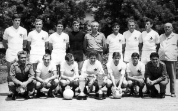
- Iau ființă secțiile de natație, polo pe apă, lupte, canotaj, kaiac-canoe;
- Se înființează și secția de alpinism, care ulterior va fi transferată la Brașov;
- Echipa de rugby aduce clubului primul titlu de Campioană Națională de echipe;
- Echipa de fotbal cucerește primul său titlu de Campioană a României;
1950
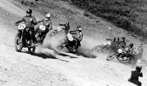- Clubul își schimbă din nou denumirea, devenind Casa Centrală a Armatei;
- Ion Vasilov cucerește titlul de campion național la box, primul din istoria secției;
- Începe dominația pe plan național a secției de motociclism (18 titluri), care va continua încă 7 ani;
- Prima victorie în campionatul național de scrimă a sportivilor militari, realizată de către formația de sabie;
1951
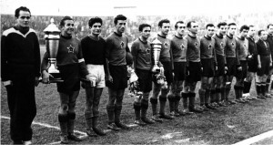- Primul event realizat de echipa de fotbal: campioană națională cu 32 de puncte, golaveraj 46-16 și câștigătoare a Cupei României prin victoria cu 3-1 în finala cu Flacăra Mediaș;
- Primii campioni naționali și pentru secția de haltere, prin Ștefan Achim și Illie Dancea;
- Ioan Söter cucerește locul I la Campionatele Internaționale de Atletism ale României;
1952
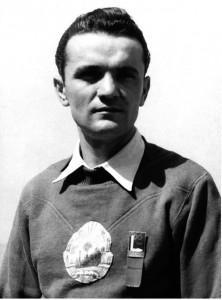- Sportivii militari participă pentru prima dată la o ediție a Jocurilor Olimpice, cea de la Helsinki;
- Prima medalie olimpică de aur din istoria sportului românesc este cucerită, la această olimpiadă, de către trăgătorul Iosif Sârbu, în proba de pușcă;
- Boxerii Vasile Tiță și Gheorghe Fiat cuceresc, tot la Helsinki, medaliile olimpice de argint, respectiv de bronz;
- Se înființează secția de bob;
1953
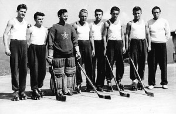- Primul titlu național pentru secția de bob, prin echipajul Ciplea – Blăgescu;
- Echipa de haltere câștigă, pentru prima dată, campionatul național, halterofilii militari stabilind 22 de recorduri naționale;
- Trăgătorul Iosif Sârbu și boxerul Gheorghe Fiat primesc primele carnete de ”maestru emerit ale sportului”;
1954
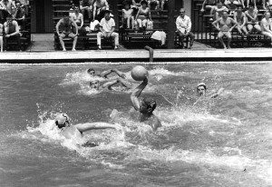- Iolanda Balaș (înălțime), Mircea Dobrescu (box), Victor Dumitrescu, Traian Ivănescu și Nicolae Tătaru (fotbal) devin campioni mondiali universitari;
- Echipa de handbal câștigă titlul național cu 10 puncte în avans;
- Se completează secția de pentatlon modern cu ofițeri selecționați de la cursul de perfecționare a ofițerilor cu pregătirea fizică;
- Prima medalie europeană a secției de atletism – argint – este cucerită de Iolanda Balaș la înălțime, femei – aer liber;
1955
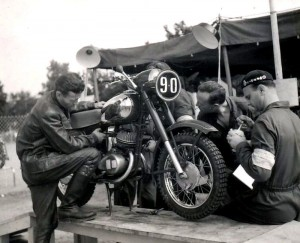- În formația Toma, V. Zavoda, Dumitresu – Onisie, Caricaș, Bone – V. Moldovan, Constantin, Alexandrescu, F. Zavoda, Tătaru, echipa de fotbal cucerește Cupa României, după o finală dramatică cu Progresul Oradea 6-3 (0-1; 3-3);
- Ilie Tudor câștigă turneul internațional de spadă de la Leipzig;
- Mircea Dobrescu obține medalia de argint la Campionatele Europene de Box de la Berlin;
1956
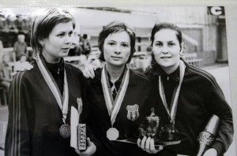- Două medalii de argint pentru schioarea Magdalena Marotineanu (coborâre și slalom), la Jocurile Mondiale Universitare de Iarnă;
- Primul record mondial al clubului militar – stabilit de Iolanda Balaș în proba de săritură în înălțime (primul din cele 14 recorduri mondiale, câte au intrat în palmaresul acestei atlete de excepție);
- Boxerii Gheorghe Negrea și Mircea Dobrescu, ca și floretista Olga Orban, cuceresc medalii de argint la J.O. de la Melbourne;
1957
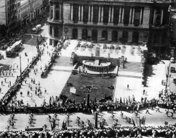- Gheorghe Negrea cucerește medalia de aur la Campionatele Europene de box de la Praga, devenind astfel primul campion european al clubului;
- CCA câștigă Cursa Munților la ciclism;
- Pentatloniștii – campioni naționali pe echipe și individual (Dumitru Țintea);
1958
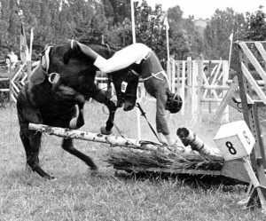
- Atleta Iolanda Balaș realizează 5 Recorduri Mondiale la săritura în înălțime;
- Echipa de fotbal ajunge în optimile de finală ale Cupei Campionilor Europeni;
- Medalie de aur la Campionatele Europene pentru Iolanda Balaș – prima medalie europeană de aur a secției;
1971
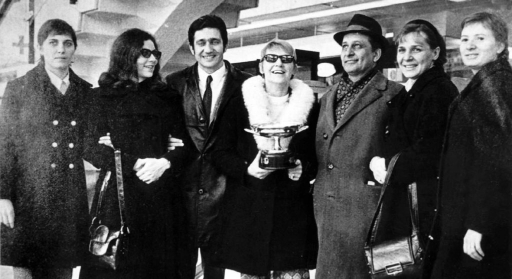- În Sala ”Pierre de Coubertin” din Paris, Ilie Năstase dă un adevărat recital în Turneul Campionilor, învingându-i , pe rând, pe Cliff Richey, Clark Graebner, Jan Kodes, Zelinko Franulovici și, în finală, pe Stan Smith;
- Ilie Năstase urcă pe locul 1 în topul european și pe 3 în cel mondial, după australianul John Newcombe și americanul Stan Smith;
- Din nou Ilie Năstase este ”cel mai bun sportiv al României”.
2011
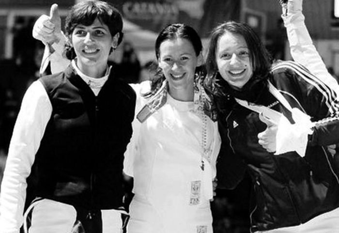- La campionatul mondial de Shotokan de la Moscova, Cristina Panait câștigă medalia de aur cu echipa României și medalia de argint la individual;
- Selina Alexandrescu se impune la Campionatul Balcanic de Călărie de la Istanbul, cucerind medalia de aur în proba de dresaj;
- Stelistele Eniko Mironcic, Ionelia Zaharia și Roxana Cogianu își păstrează titlul de campioane europene impunându-se la Bled, în Slovenia, cu echipajul de 8+1 al României;
- Echipa de spadă feminin a CSA Steaua formată din Ana-Maria Brânză, Simona Alexandru și Anca Măroiu, câștigă, pe rând, Cupa Campionilor Europeni de la Napoli, Campionatul European de seniori de la Sheffield și Campionatul Mondial Militar de la Rio de Janeiro;
- La Campionatul European de Tir de la Belgrad, Serbia, junioara Roxana Tudose cucerește medalia de aur și titlul de campioană europeană în proba de pușcă 60 focuri culcat, stabilind totodată și un nou record național al probei;
Pentru modele de echipament accesati butonul de mai jos:
Steaua=CSA!
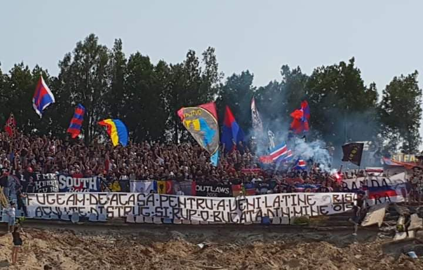
Peluza(2017)
Vezi daca esti norocosul suporter cu numarul 1.000.000 care viziteaza site-ul si poti castiga 2 bilete la Campionatul European de anul acesta!
Felicitari!!
Ne pare rau! Mai incearca
Felicitari!!
Ne pare rau! Mai incearca